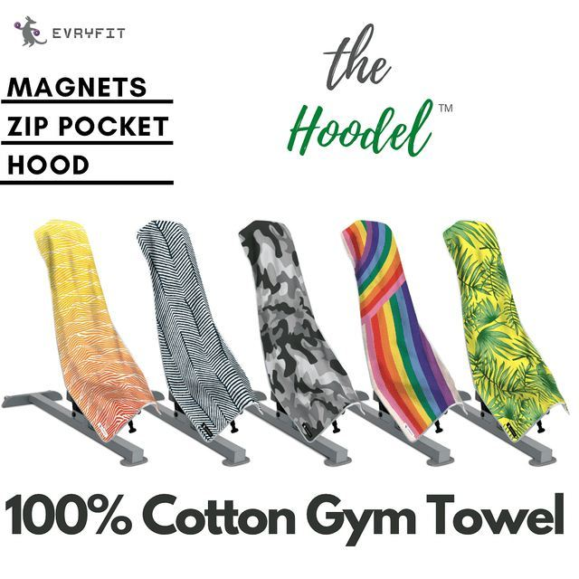

Evryfit & The Hoodel
A fitness-focused D2C brand. The Hoodel was a product designed and manufactured from scratch, taken through sourcing, production, and end-to-end ecommerce execution.

Bathroom Planner Tool
Built during a home construction project. Existing tools didn't match how decisions actually needed to be made. A small, focused build driven by a real operational constraint.

Vintage Designer Resale
Authenticated vintage luxury from Chanel, Hermes, and YSL at accessible price points. The supply-demand mismatch made the model difficult to sustain. A learning experiment.